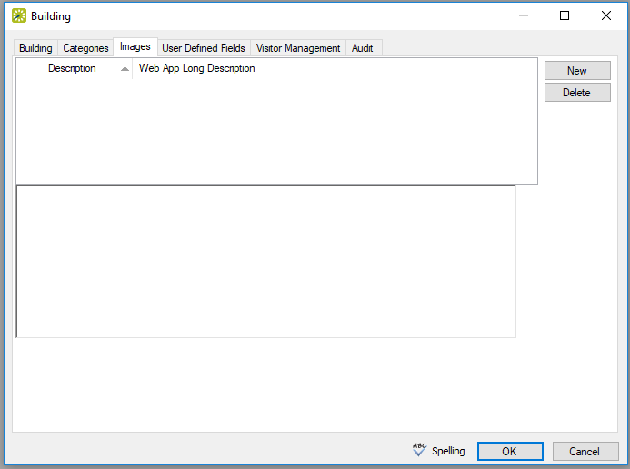

A building is a physical location that contains one or more spaces (e.g., rooms, open areas, etc.), that users can reserve for an event. Buildings are one of the core data items that you must configure so that your users can make reservations in
This topic will provide the following information:

Tip:By default, when you configure a building, the building hours are set to Open All Day. To change these hours, see
|
Field |
|
|---|---|
|
Building |
Required field. The name of the building (maximum 50 characters, including spaces). |
|
Building Code
|
Required field. Abbreviated text that conveys the building name or description (maximum 20 characters, including spaces). For example, if a building is named the Conference Building, then a code for the building could be CONF. |
|
Notes |
Free-form text that provides any additional information or description about the building. |
|
URL |
The web address of a web page that provides more information about the building (for example, Google Maps). |
|
Print Notes on Confirmation |
Include the building notes in any confirmations that are printed for events that are scheduled in the building. |
|
Time Zone |
Required field. Select the time zone in which the building resides. Note: If you are configuring buildings in EMS Enterprise, you can select a unique time zone for each building. If you are configuring buildings in |
|
Currency |
Select the currency to be used for pricing all rooms in the building. See |
|
External Reference |
Links the building to an outside program, if needed. |
|
Cost Per Sq. Ft./Meter Per Yr. |
Building cost. Used on the Room Utilization report. |
|
Annual Operating Hours |
Total number of hours that the building is open during a calendar year. Used on the Room Utilization report. |
|
Latitude
|
This field relates to geofencing in the EMS Mobile App.
|
|
Longitude
|
This field relates to geofencing in the EMS Mobile |
You can restrict specific categories to specific buildings.

Tip:The Available to All Buildings list in the lower right pane displays all the categories that are always available to all buildings and you cannot edit this list. You can also link buildings and categories when you are configuring categories. See
Images are displayed as thumbnails when an Everyday User views details about a building. You can associate an image with a building if the image is in one of the following formats: .gif, .jpeg, .jpg, .bmp, .wmf, or .png and ideally, it should not be larger than 615 x 350 pixels. If you attach an image larger than this, you might not be able to view the image without scrolling.

The UDF fields are used to flag details associated with a building for reporting purposes. These fields are typically used when integrating with other systems.

The Visitor Management tab is displayed only if your organization has purchased and installed the optional Visitor Management module, which enables front-desk users such as reception to check in visitors, print badges, access lists of visitors, and run reports. The values that you specify on this tab are used when a new visitor checks into your building.
See Also:

|
|
|---|---|
|
Category |
Select an Attendee type category. See |
|
Room |
The Override room that is booked for the unregistered visitor’s/attendee’s reservation. Note: Typically, you would want to book an Override room named something such as Other Space, Unregistered Space, or so on. See |
|
Status |
The status that is used for an unregistered visitor’s/attendee’s reservation. See |
|
Event Type
|
The event type that is used for the unregistered visitor’s/attendee’s reservation. Note: Typically, you would want to use an event type named something such as Unregistered Visitor, Unregistered Attendee or so on. See |
|
The event name that is used for the unregistered visitor’s/attendee’s reservation. Note: You can include the variable for Group Name (the name of the group that the visitor/attendee is seeing) in the subject line as described in the Legend. For example, “Unregistered Visitor for%1%” would result in “Unregistered Visitor for Academic Affairs” being displayed in the subject line. |
|
End Time
|
The booking for the unregistered visitor/attendee is created from the current time until the end time that you specify. |